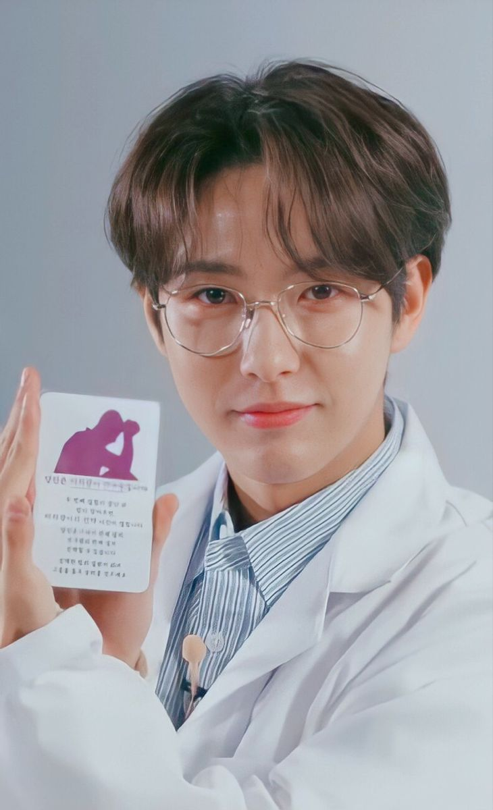

Pediatri(Anak) - Spesialis Anak
dr. Do Hyun, SpA
dr.Do Hyun, SpA adalah dokter spesialis Ilmu Kesehatan Anak dengan subspesialisasi Di Bidang Neurologi Anak. Setelah Menamatkan....
' Dokter Rs Healvibe '


Penyakit Dalam - Spesialis Penyakit Dalam
dr. Jung Suk, SpPD
dr.Jung Suk, SpPD Adalah Spesialis Penyakit Dalam Dengan Peminatan Di....
dr.Jung Suk, SpPD Adalah Spesialis Penyakit Dalam Dengan Peminatan Di....
Penyakit Dalam - Spesialis Penyakit Dalam
dr. Yeon Seok, SpPD
dr.Yeon Seok, SpPD Adalah Spesialis Penyakit Dalam Dengan Peminatan Di Bidang Ginjal Hipertensi Dan Hematologi Onkologi Medik....
dr.Yeon Seok, SpPD Adalah Spesialis Penyakit Dalam Dengan Peminatan Di Bidang Ginjal Hipertensi Dan Hematologi Onkologi Medik....

Neurologi (Otak Dan Saraf) - Spesialis Saraf
dr. Jaemin, SpN
dr.Jaemin, SpN Merupakan Spesialis Saraf. Setelah Menyelesaikan Pendidikan Dokter Umum Di Fakultas Kedokteran Universitas Sriwijaya....
dr.Jaemin, SpN Merupakan Spesialis Saraf. Setelah Menyelesaikan Pendidikan Dokter Umum Di Fakultas Kedokteran Universitas Sriwijaya....

Neurologi (Otak Dan Saraf) - Spesialis Saraf
dr. Doyoung, SpN
dr.Doyoung, SpN Adalah Dokter Spesialis Saraf. Setelah Lulus Pendidikan Dokter Umum Dari Fakultas Kedokteran Universitas Indonesia....
dr.Doyoung, SpN Adalah Dokter Spesialis Saraf. Setelah Lulus Pendidikan Dokter Umum Dari Fakultas Kedokteran Universitas Indonesia....
Kedokteran Gigi - Dokter Gigi
drg. Niki
drg.Niki Adalah Dokter Gigi Lulusan Dari Fakultas Kedokteran Gigi, Universitas Sriwijaya. drg.Niki Aktif Mengikuti ....
drg.Niki Adalah Dokter Gigi Lulusan Dari Fakultas Kedokteran Gigi, Universitas Sriwijaya. drg.Niki Aktif Mengikuti ....
Otolaringologi (THT) - Spesialis Telinga-Hidung-Tenggorok-Kepala-Leher
dr. Jay, SpTHT-KL
dr.Jay, SpTHT-KL Adalah Spesialis Telinga, Hidung, Dan Tenggorokan, Kepala Dan Leher Serta Konsultan Bagian Laring....
dr.Jay, SpTHT-KL Adalah Spesialis Telinga, Hidung, Dan Tenggorokan, Kepala Dan Leher Serta Konsultan Bagian Laring....

Otolaringologi (THT) - Spesialis Telinga-Hidung-Tenggorok-Kepala-Leher
dr. Taehyun, SpTHT-KL
dr.Taehyun, SpTHT-KL Adalah Spesialis Telinga, Hidung, Dan Tenggorokan, Kepala Dan Leher. Setelah Menamatkan Pendidikan Dokter....
dr.Taehyun, SpTHT-KL Adalah Spesialis Telinga, Hidung, Dan Tenggorokan, Kepala Dan Leher. Setelah Menamatkan Pendidikan Dokter....
Otolaringologi (THT) - Spesialis Telinga-Hidung-Tenggorok-Kepala-Leher
dr. Hueningkai, SpTHT-KL
dr.Hueningkai, SpTHT-KL Adalah Spesialis Telinga, Hidung, Dan Tenggorokan, Kepala Dan Leher. Setelah Menamatkan Pendidikan....
dr.Hueningkai, SpTHT-KL Adalah Spesialis Telinga, Hidung, Dan Tenggorokan, Kepala Dan Leher. Setelah Menamatkan Pendidikan....
Oftalmologi (Mata) - Spesialis Mata
dr. Mark, SpM
dr.Mark, SpM Adalah Dokter Spesialis Mata. Setelah Lulus Pendidikan Dokter Umum Dari Fakultas Kedokteran Universitas Indonesia....
dr.Mark, SpM Adalah Dokter Spesialis Mata. Setelah Lulus Pendidikan Dokter Umum Dari Fakultas Kedokteran Universitas Indonesia....
Oftalmologi (Mata) - Spesialis Mata
dr. Heeseung, SpM
dr.Heeseung, SpM Adalah Dokter Spesialis Mata. Setelah Lulus Pendidikan Dokter Umum Dari Fakultas Kedokteran Universitas Gadjah....
dr.Heeseung, SpM Adalah Dokter Spesialis Mata. Setelah Lulus Pendidikan Dokter Umum Dari Fakultas Kedokteran Universitas Gadjah....

Oftalmologi (Mata) - Spesialis Mata
dr. Chenle, SpM
dr.Chenle, SpM Adalah Dokter Spesialis Mata. Setelah Lulus Pendidikan Dokter Umum Dari Fakultas Kedokteran Universitas Diponegoro....
dr.Chenle, SpM Adalah Dokter Spesialis Mata. Setelah Lulus Pendidikan Dokter Umum Dari Fakultas Kedokteran Universitas Diponegoro....


Dermatologi (Kulit) - Spesialis Kulit Dan Kelamin
dr. Soobin, SpKK
dr.Soobin, SpKK Adalah Dokter Spesialis Kulit Dan Kelamin. Setelah Menyelesaikan Pendidikan Dokter Umum Di Dua Negara....
dr.Soobin, SpKK Adalah Dokter Spesialis Kulit Dan Kelamin. Setelah Menyelesaikan Pendidikan Dokter Umum Di Dua Negara....
Dermatologi (Kulit) - Spesialis Kulit Dan Kelamin
dr. Sunoo, SpKK
dr.Sunoo, SpKK Merupakan Lulusan Fakultas Kedokteran Universitas Brawijaya, Malang. Pendidikan Yang Ditempuh Mengantarkan....
dr.Sunoo, SpKK Merupakan Lulusan Fakultas Kedokteran Universitas Brawijaya, Malang. Pendidikan Yang Ditempuh Mengantarkan....
Dermatologi (Kulit) - Spesialis Kulit Dan Kelamin
dr. Jungwon, SpKK
dr.Jungwon, SpKK Merupakan Dokter Spesialis Kulit Dan Kelamin. Setelah Menyelesaikan Pendidikan Dokter Umum Di Universitas....
dr.Jungwon, SpKK Merupakan Dokter Spesialis Kulit Dan Kelamin. Setelah Menyelesaikan Pendidikan Dokter Umum Di Universitas....
Kebidanan Dan Kandungan - Spesialis Obstetri Dan Ginekologi
dr. Jaehyun, SpOG
dr.Jaehyun, SpOG Adalah Dokter Spesialis Obstetri Dan Ginekologi. Setelah Menyelesaikan Pendidikan Dokter Umum Di Fakultas Kedokteran Universitas....
dr.Jaehyun, SpOG Adalah Dokter Spesialis Obstetri Dan Ginekologi. Setelah Menyelesaikan Pendidikan Dokter Umum Di Fakultas Kedokteran Universitas....
Kebidanan Dan Kandungan - Spesialis Obstetri Dan Ginekologi
dr. Jeno, SpOG
dr.Jeno, SpOG Adalah Dokter Spesialis Obstetri Ginekologi Dan Konsultan Fertilitas & Endokrinologi Reproduksi. Setelah Menyelesaikan Pendidikan Dokter....
dr.Jeno, SpOG Adalah Dokter Spesialis Obstetri Ginekologi Dan Konsultan Fertilitas & Endokrinologi Reproduksi. Setelah Menyelesaikan Pendidikan Dokter....

Kebidanan Dan Kandungan - Spesialis Obstetri Dan Ginekologi
dr. Renjun, SpOG
dr.Renjun, SpOG Adalah Dokter Spesialis Obstetri Ginekologi. Setelah Menyelesaikan Pendidikan Dokter Umum Di Fakultas Kedokteran Universitas....
dr.Renjun, SpOG Adalah Dokter Spesialis Obstetri Ginekologi. Setelah Menyelesaikan Pendidikan Dokter Umum Di Fakultas Kedokteran Universitas....